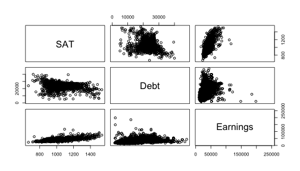
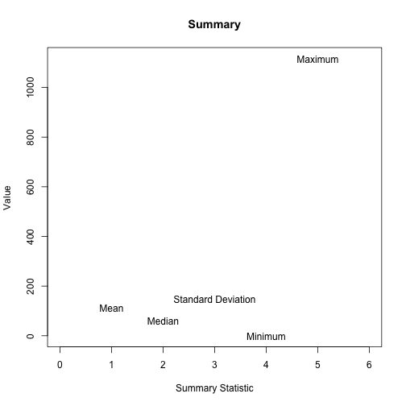
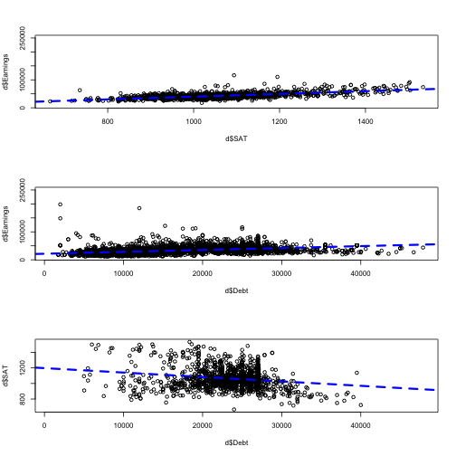
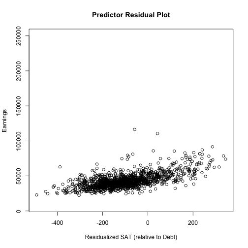
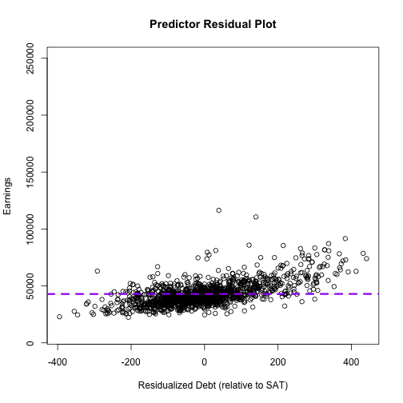
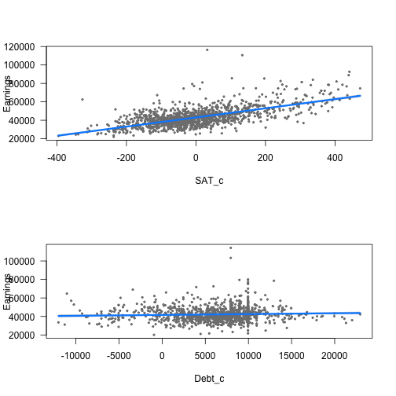
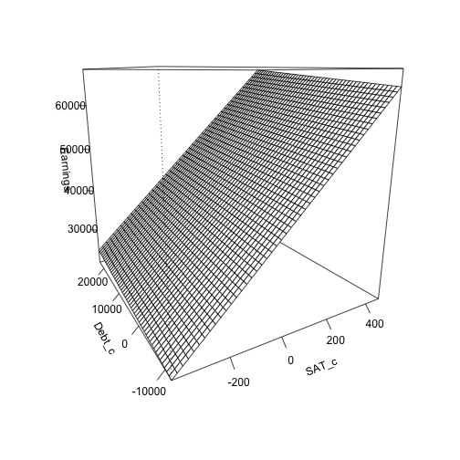
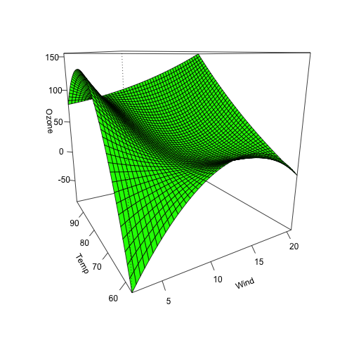

setwd("/Users/Daniel/Dropbox/Teaching/CourseR/data/")
d <- read.csv("CollegeScorecard.csv", na = c("NULL", "PrivacySuppressed"))
Note the use of the na vector, rather than an individual argument
Daniel Anderson
CourseR
setwd("/Users/Daniel/Dropbox/Teaching/CourseR/data/")
d <- read.csv("CollegeScorecard.csv", na = c("NULL", "PrivacySuppressed"))
Note the use of the na vector, rather than an individual argument
d <- d[ ,c("INSTNM", "STABBR", "SAT_AVG_ALL", "GRAD_DEBT_MDN_SUPP", "md_earn_wne_p10")]
names(d) <- c("Institution", "State", "SAT", "Debt", "Earnings")
d$SAT_c <- d$SAT - mean(d$SAT, na.rm = TRUE)
mean(d$SAT_c, na.rm = TRUE)
## [1] -0.000000000000009
d$Debt_c <- d$Debt - mean(d$Debt, na.rm = TRUE)
mean(d$Debt_c, na.rm = TRUE)
## [1] -0.0000000000017
d[5:6, ]
## Institution State SAT Debt Earnings SAT_c Debt_c
## 5 Alabama State University AL 830 33452 27800 -232 16405
## 6 The University of Alabama AL 1171 24000 42400 109 6953
pairs(d[ ,3:5])

par(mfcol = c(3, 1))
hist(d[ ,3]) # SAT
hist(d[ ,4]) # Debt
hist(d[ ,5]) # Earnings

par(mfcol = c(3, 1))
plot(density(d[ ,3], na.rm = TRUE))
plot(density(d[ ,4], na.rm = TRUE))
plot(density(d[ ,5], na.rm = TRUE))

library(arm)
mA <- lm(Earnings ~ SAT, data = d)
display(mA, detail = TRUE)
## lm(formula = Earnings ~ SAT, data = d)
## coef.est coef.se t value Pr(>|t|)
## (Intercept) -9181.28 1667.70 -5.51 0.00
## SAT 49.04 1.56 31.42 0.00
## ---
## n = 1475, k = 2
## residual sd = 7791.29, R-Squared = 0.40
mB <- lm(Earnings ~ Debt, data = d)
display(mB, detail = TRUE)
## lm(formula = Earnings ~ Debt, data = d)
## coef.est coef.se t value Pr(>|t|)
## (Intercept) 21624.71 361.12 59.88 0.00
## Debt 0.68 0.02 37.75 0.00
## ---
## n = 5052, k = 2
## residual sd = 11187.05, R-Squared = 0.22
mC <- lm(SAT ~ Debt, data = d)
display(mC, detail = TRUE)
## lm(formula = SAT ~ Debt, data = d)
## coef.est coef.se t value Pr(>|t|)
## (Intercept) 1197.35 16.95 70.62 0.00
## Debt -0.01 0.00 -8.06 0.00
## ---
## n = 1502, k = 2
## residual sd = 126.70, R-Squared = 0.04
Debt is very small, because it represents the expected
change in the outcome given a one dollar increase in debt. par(mfcol = c(3,1))
plot(d$Earnings ~ d$SAT)
abline(coef(mA)[1], coef(mA)[2],
col = "blue", lwd = 3, lty = 2)
plot(d$Earnings ~ d$Debt)
abline(coef(mB)[1], coef(mB)[2],
col = "blue", lwd = 3, lty = 2)
plot(d$SAT ~ d$Debt)
abline(coef(mC)[1], coef(mC)[2],
col = "blue", lwd = 3, lty = 2)

mAc <- lm(Earnings ~ SAT_c, data = d)
display(mAc, detail = TRUE)
## lm(formula = Earnings ~ SAT_c, data = d)
## coef.est coef.se t value Pr(>|t|)
## (Intercept) 42885.13 202.88 211.39 0.00
## SAT_c 49.04 1.56 31.42 0.00
## ---
## n = 1475, k = 2
## residual sd = 7791.29, R-Squared = 0.40
mBc <- lm(Earnings ~ Debt_c, data = d)
display(mBc, detail = TRUE)
## lm(formula = Earnings ~ Debt_c, data = d)
## coef.est coef.se t value Pr(>|t|)
## (Intercept) 33263.84 158.27 210.17 0.00
## Debt_c 0.68 0.02 37.75 0.00
## ---
## n = 5052, k = 2
## residual sd = 11187.05, R-Squared = 0.22
mCc <- lm(SAT_c ~ Debt_c, data = d)
display(mCc, detail = TRUE)
## lm(formula = SAT_c ~ Debt_c, data = d)
## coef.est coef.se t value Pr(>|t|)
## (Intercept) 38.77 5.65 6.87 0.00
## Debt_c -0.01 0.00 -8.06 0.00
## ---
## n = 1502, k = 2
## residual sd = 126.70, R-Squared = 0.04
mr <- lm(Earnings ~ SAT_c + Debt_c, data = d)
display(mr, detail = TRUE)
## lm(formula = Earnings ~ SAT_c + Debt_c, data = d)
## coef.est coef.se t value Pr(>|t|)
## (Intercept) 42308.84 365.64 115.71 0.00
## SAT_c 49.72 1.61 30.86 0.00
## Debt_c 0.09 0.05 1.99 0.05
## ---
## n = 1455, k = 3
## residual sd = 7783.43, R-Squared = 0.40
One of the best ways to visualize multiple regression models is through a predictor residual plot, which displays the relation between one of the variables and the outcome after partialing common variance with the other predictor. In the case of a model with two predictors, you would
Y (outcome) and one as the X
(predictor). For example, Model C.X1
partialed from X2, or vice-versa)Y (outcome) and one as the X
(predictor). For example, Model C.mCc <- lm(SAT_c ~ Debt_c, data = d)
predSAT <- coef(mCc)[1] + coef(mCc)[2]*d$Debt_c
X1
partialed from X2, or vice-versa)resSAT <- d$SAT_c - predSAT
plot(resSAT, d$Earnings,
main = "Predictor Residual Plot",
xlab = "Residualized SAT
(relative to Debt)",
ylab = "Earnings")

The previous plot displays the relation between Earnings and SAT_c while
accounting for (i.e., residualzing for) Debt_c. To actually plot the residualzed line, you'll need to fit one additional model.
resLine <- lm(d$Earnings ~ resSAT)
coef(resLine)
## (Intercept) resSAT
## 47806 50
Note that the coefficient for the above model is essentially equivalent to the multiple regression coefficient, and if there were no missing data would be identical (though the intercept does change, because of meaning of a value of 0 on the residualized predictor).
coef(mr)
## (Intercept) SAT_c Debt_c
## 42308.842 49.719 0.092
To add the regression line, just use abline() like normal

abline(coef(resLine)[1], coef(resLine)[2], col = "red", lwd = 3, lty = 2)
mDc <- lm(Debt_c ~ SAT_c, data = d)
predDebt <- coef(mDc)[1] +
coef(mDc)[2]*d$SAT_c
resDebt <- d$Debt_c - predDebt
resDebtLine <- lm(d$Earnings ~ resDebt)
plot(resSAT, d$Earnings,
main = "Predictor Residual Plot",
xlab = "Residualized Debt
(relative to SAT)",
ylab = "Earnings")
abline(coef(resDebtLine)[1],
coef(resDebtLine)[2],
col = "purple", lwd = 3, lty = 2)

install.packages("visreg")
library(visreg)
par(mfrow = c(2,1))
visreg(mr)

visreg2d(mr, "SAT_c", "Debt_c", plot.type = "persp")

fit <- lm(Ozone ~ Solar.R + Wind +
Temp + I(Wind^2) + I(Temp^2) +
I(Wind * Temp) + I(Wind*Temp^2) +
I(Temp*Wind^2) + I(Temp^2 * Wind^2),
data = airquality)
visreg2d(fit, "Wind", "Temp",
plot.type = "persp", col = "green")
